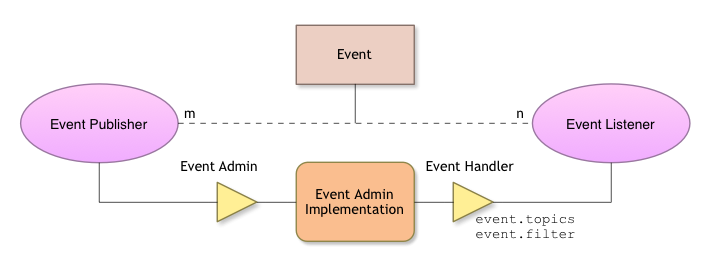

Event Admin Service
Introduction
In a dynamic environment like OSGi, communication with events has a wide variety of use cases. A lot of core services share information using events, so understanding how to use events in OSGi is fundamental.
Basics
Publish-Subscribe Pattern
OSGi events are based on the publish-subscribe messaging pattern. Let’s use the definition for the pattern that can be found in the OSGi Compendium Specification : This pattern decouples sources from their handlers by interposing an event channel between them. The publisher posts events to the channel, which identifies which handlers need to be notified and then takes care of the notification process.
What is interesting about the OSGi model is that both publishers and subscribers can disappear at any time. A central module to track the handlers availability is needed - the Event Admin Service.
Event Admin Service
The Event Admin Service (org.osgi.service.event.EventAdmin) takes a central place in the communication between Event Publishers and subscribers (Event Listeners). It is responsible for keeping track of the listeners, and sending events to them. It supports both synchronous and asynchronous sending that will be reviewed in more details in the section about sending events. But let’s illustrate that with the following picture:

Fig.1 Event Admin Service (Source: http://enroute.osgi.org/img/services/org.osgi.service.event.overview.png)
{kind=link}
Before going into more details, let’s take a look at the events.
Event
The Event interface(org.osgi.service.event.Event) encapsulates a single message. It contains:
- topic - used from the Event Admin Service as a filter to dispatch the events only to the listeners that are interested;
- payload - the information that we would like to send. It is represented by a key-value pair.
Receive Events
In order to receive an event through the Event Admin Service we have to register a service that implements the org.osgi.service.event.EventHandler interface with a property event.topics that contains all topics that we are interested in. An example with Declarative Service:
<scr:component name="com.example.handler" xmlns:scr="http://www.osgi.org/xmlns/scr/v1.1.0">
<implementation class="com.example.LogEventHandler"/>
<property name="event.topics" type="String" value="some/topic"/>
<service>
<provide interface="org.osgi.service.event.EventHandler"/>
</service>
<reference cardinality="1..1" interface="org.osgi.service.log.LogService" name="LogService" policy="static"/>
</scr:component>
package com.example.handler;
import org.osgi.service.event.Event;
import org.osgi.service.event.EventHandler;
import org.osgi.service.log.LogService;
public class LogEventHandler implements EventHandler {
private LogService logService;
protected void bind(LogService logService) {
this.logService = logService;
}
@Override
public void handleEvent(Event event) {
logService.log(LogService.LOG_DEBUG, " Recevied event with topic: " + event.getTopic());
}
protected void undbind(LogService logService) {
this.logService = null;
}
}
You can register a handler for multiple topics by adding the topics to the event.topics property (<property name="event.topics" type="String" value="some/topic,other/topic"/>) or by using wildcard symbol (<property name="event.topics" type="String" value="some/topic/*"/>).
Send Events
As we have already mentioned, you will need an Event Admin Service implementation to send events. In Equinox the service is implemented in the org.eclipse.equinox.event bundle. The service contains two methods for sending events:
void postEvent(Event event)- sends an Event asynchronously;void sendEvent(Event event)- sends an Event synchronously;